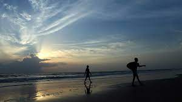
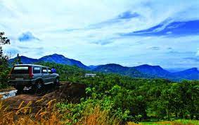
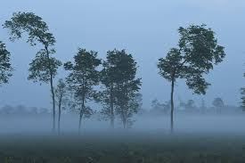

Keralamkundu Waterfall
A basin at the base of waterfalls where people can enjoy a dip in the pond is something everyone wants to have an experience. Keralam Kundu Waterfalls are undoubtedly the best of all Malappuram Tourist Places, and that is why people keep flocking here to have an experience of the mystical. The water flows in from the forest of the western ghat and forms a pool of crystal clear water at the base of the falls. Also, it is believed that the water has many medicinal properties.

Padinharekara Beach
The main attraction of the Padinjarekara beach is its location, where two rivers join together into the sea. The confluence of Bharathapuzha, Tirur puzha and Arabian Sea is a visually pleasing sight. Located at 17 km from Tirur town in Malappuram, this beach also has a number of water-based adventure sports like water scooters, speed boats or just idle cruises. The other visitors are the migratory birds that flock its shores

Ambanad Hills & Kodikumala
Do you know what Ambanad’s greatest treasure is? SOLITUDE. As it is a less explored slice of heaven, you won’t find many tourists here, and you will get enough time to connect with the magic of the verdant green. With its vast expanses of tea and rubber plantations, this hill station with an estate is a perfect getaway for a happy weekend. Apart from its magical vistas, the place has small streams and cascades. Here you can take dips in the magnificent splendour of Mother Nature and have a truly memorable experience.

Kadalundi Bird Sanctuary
This untouched land has over 60 species of migratory birds from across the planet that visits it during different times of the year. One can see seagulls, terns, sandpipers, sand plovers, red and greenshanks, turnstones and so on with November to April being the ideal viewing time. A small hill nearby gives you a panoramic view of the entire region. You can sit back and relax, with the odd otter peeking out at you playfully. This is indeed a paradise designed especially for bird lovers.

Nedumkayam Rainforest
Elephants are a major attraction of the jungle here, and a taming camp for jumbos is a tourist-magnet. Apart from elephants, bison, tiger, rabbit, blue monkey, bear, wildcat and deer are some of the wild animals spotted in the forests. With more than 200 species of birds, the forest has been classified as an ‘Important Bird Area’ (using an internationally agreed set of criteria to identify globally important places for the conservation of bird populations). White-rumped Vulture, Malabar Parakeet, Malabar Grey Hornbill, Crimson Backed Sunbird and more.